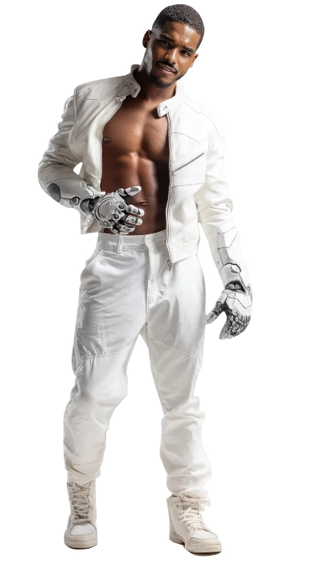
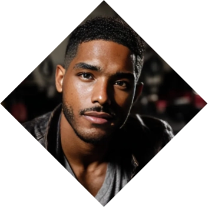
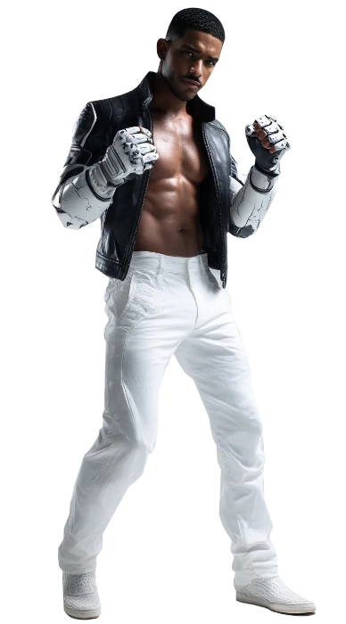

Arden Dupont
Arden Dupont
The Hunter
Arden Dupont, a gifted engineer with a mind honed for precision and invention, never imagined his life would be forged in blood and fire. Raised by his loving father Nicolás Garza, Arden lived in the long, cold shadow of Archer Dupont—a Hermetic mage more devoted to arcane ascension than fatherhood. When Archer's reckless pursuit of mystical power culminated in the theft of a Tremere grimoire and the murder of a vampire elder, it sparked a war that ended with Nicolás brutally slain before Arden’s eyes.
The trauma of that night reshaped Arden's life into a weapon. Abandoning dreams of innovation for the battlefield of the night, he began crafting traps and devices designed to expose and eradicate the undead. Father and son became unlikely allies, bound by shared loss and vengeance. But as Arden uncovered the truth—that Archer’s arrogance had ignited the conflict—his war became more than survival. It became a reckoning, not just for the monsters in the dark, but for the man who made him one. ❧
Plot Hooks.
Hunting monsters. Arden seeks lost Hermetic texts to understand the vampires’ grimoire, putting him at odds with mages and monsters alike. He’s hunted by Tremere agents, haunted by visions of Nicolás, and unsure if Archer is truly on his side.Signature Motif.
Technomagic. Arden wears a grease-streaked mechanic's coat over reinforced Kevlar, adorned with sigils from his father’s notes. His signature: silver screws etched with wards, left behind like calling cards after a successful vampire kill or a narrowly avoided ambush.Perfect for...
Technothriller Arden thrives in techno-thriller horror, where gritty urban hunts collide with mysticism. Stories may explore fractured legacies, the burden of vengeance, and the cost of obsession. Expect tense alliances, father-son conflict, and soul-shattering choices between justice and destruction.Goal
Vengeance.
Though driven by vengeance, Arden fears becoming the same kind of zealot as his father. He wants to end the war, not perpetuate it. If possible, he seeks a way to redeem the parts of himself that still feel.obstacle
The Camarilla.
Every vampire kill numbs something in him. Allies urge more blood, more tools, more rage. Redemption feels unreachable when even his victories are soaked in loss. And Archer—ever pragmatic—keeps whispering that compassion is a liability hunters can’t afford.«I want something good to die for...»
Personal Data

Arden Gabriel Dupont
Name
30
Age
09/Dec/1995
DOB
Vengeance
Drive
Brown
Hair
Brown
Eye color
Vengeance
Drive
Black - Latin
Ethnicity
Canadian
Nationality
Respected
Status
1.83m
Height
94 kg
Weight
English and French
Languages
Male
Gender
Homosexual
Preference
Mechanic
Profession
Top
Position
8.5" / 5.5"
length / Girth
Rome Flynn
Faceclaim
The Strength
Tarot Card
ENTP
MBTI
Character sheet
Attributes
Distinctions
skills
Drive
Martial

Nature
Survivalist
Demeanor
Visionary


Resilient
Resourceful
Tenacious
Self-sufficient
Practical
Ruthless
Inflexible
Cynical
Intolerant
Cold-hearted
Resourceful
Tenacious
Self-sufficient
Practical
Ruthless
Inflexible
Cynical
Intolerant
Cold-hearted
Determined
Inspirational
Creative
Optimistic
Persuasive
Idealistic
Fanatical
Impractical
Naïve
Irrational
Inspirational
Creative
Optimistic
Persuasive
Idealistic
Fanatical
Impractical
Naïve
Irrational
Strength

Dexterity
Stamina
Charisma
Manipulation

Composure
Intelligence
Wits
Resolve

Desperation
🙪
Specialties
Inventions
Fucking up Vamps
Martial Arts
Seduction
Craft
Subterfuge
Insight
Science
Technology
Firearms
Intimidation
Persuasion
Brawl
Athletism
Awareness
Meele
Streetwise
Drive
Occult
Other skills
Hunting Advantages
Motivation
What moves him
Martial Creed: Reroll any hitches in Physical conflict while on the Hunt (which need to be not with the quary itself or the supernatural.)
Vengeance Drive: Up the category of your Effect dice in rolls directly involved with extracting your sworn vengeance.
Arsenal
Firepower
Exotics Can find specific and exotic arsenal for the Hunt. Create a D6 advantage when using said equipment.
Ordnance
Ammunition
Exotics Rare ammo that exploits the quarry's weaknesses can be found for the Hunt. Create a D6 advantage when using said ammo.
Artifact
Special Devices
Empower The Hyper Strength Exo-Gloves is an invention created by Arden that allows him to create a D6 advantage on Brawl rolls or Strength feats.
Detection The Blankbody Reader is an invention that allows him to detect tell tale signs of Vampires. Create a D6 advantage on Insight or Awareness rolls to detect Vampires.
Backgrounds



Signature Assets
Check the Trunk
He knows he´s as good as his preparation. Dramatically, he can create D6 advantages for items that could be easily found on his car's trunk.
Unseemly Aura
If he wasn't a Hunter, he would have Awoken as a Willworker like his father. The genius is in his blood though, as he is capable of constructing machines that defy reality at times. Up the category of Social rolls when dealing with Mages, or Intimidation rolls with other splats.
Enchanting Feature: Smile
A smile that charms, disarms and sometimes, disrobes. Can add a D6 to the dice pool when required.
Other Assets
Contacts
A group of individuals who provide him with items, information or privileges and that aid him in his quest. Some may receive money for payment, others may require other forms of payment. Writers are encouraged to take up this role if required.
Mentor
While his father may be a difficult and sore topic, he cannot deny the expertise and abilities the oldest Dupont has, who has taught him in how to deal with the Massasa, as he calls them.
Safe House
A Car Workshop where he originally started working until the owner decided to retire and found a protege in the young man. By day it's just a workshop, by night it's used by him and his Cell to create items used in the fight against Darkness. Contains a lab, an engineering workshop and a medical bay.